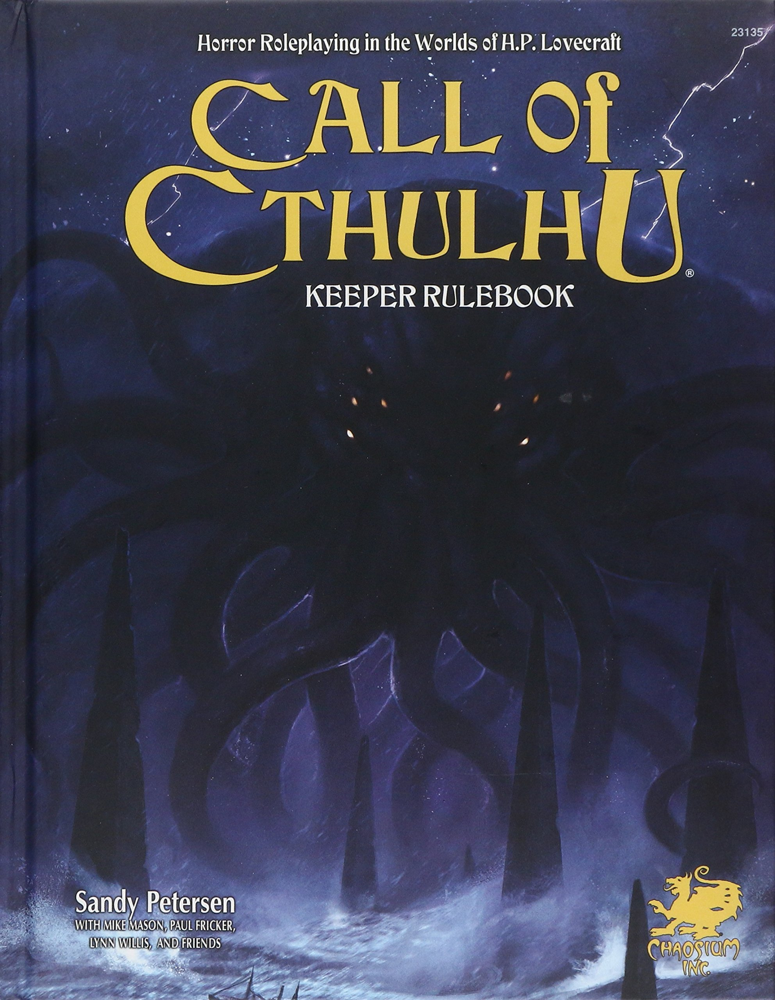

Durante la pandemia de SARS-CoV-2 y con mucho tiempo libre y me aventuré a empezar a jugar juegos de rol de mesa. Anteriormente ya había jugado un poco, pero quería más.
Mi interés principal siempre fue Dungeons and Dragons (D&D) debido a su popularidad como El juego de rol por excelencia, seguido de Call of Cthulhu (Coc) por su atmosfera terrorifica ambientada en los años 20.
Entré en un servidor de Discord en el que conocí gente divertida con la cual jugué unas
pocas sesiones cortas de D&D y una campaña corta de CoC ambientada en el norte de México pasada la
guerra cristera.
Fue en esta última que salío uno de los personajes que más me han gustado
interpretar, el Fray Eustaquio Rosas y desde el cual he notado cierta predilección por interpretar
personajes creyentes o mágicos:
Mi interés cambió al conocer
Starfinder.
Ambientado en un futuro tecnomágico, el sistema de juego es entretenido y muy
personalizable. Deja atrás los límites tecnológicos e informativos que hay en la edad media sin
dejar de lado aspectos mágicos de la alta fantasía.
Starfinder y Pathfinder son propiedad de Paizo, sus libros físicos son más baratos que los de
Wizards of the Coast, compañía dueña de D&D. Paizo también tiene los mismos libros en formato digital
aún más baratos.
Y si el dinero sigue siendo problema, Paizo pone todas las reglas a disposición
de todos en el Archyve of Nethys así no solo revisar las reglas es
más sencillo, no es necesario gastar ni un peso para empezar.